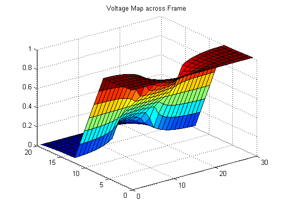
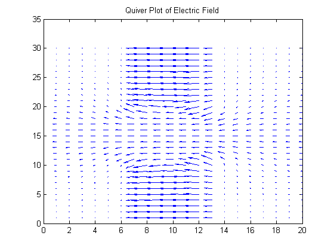
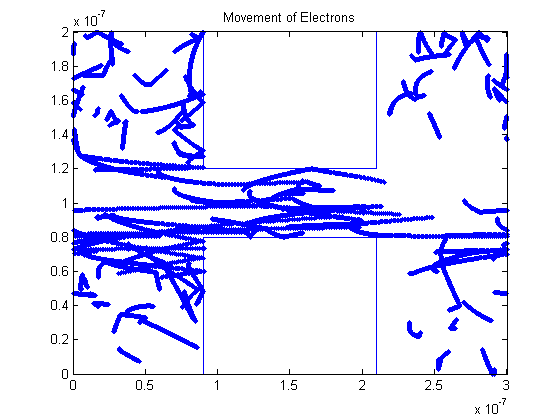
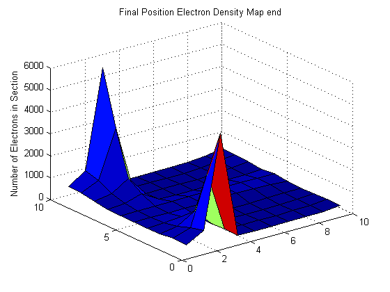
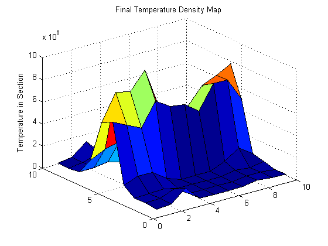

Contents
%%Assignment 3: Part 3
Part 3: Question A
%Firstly, the voltage map and electric field plots shown in part2 will be %generated again. This time, the voltage map will be coupled with the monte %carlo simulation of the particles moving amongst two conductive %(reflective) material. clc
Generate the Voltage Map and Electric Fields
%The finite difference method will be used again: %Set Frame Size L=30; nx = 2*L/3; ny = L; %Voltage at boundary vx=1; G = sparse(nx*ny); v = zeros(1,nx*ny); %Conductivity outside box sig1 = 1; %Conductivity inside box sig2 = 1e-2; %Establish dimensions of each box % [Left side, right side, top of box, bottom of box] box1 = [nx*1.5/5 nx*3.5/5 ny ny*3/5]; box2 = [nx*1.5/5 nx*3.5/5 ny*2/5 0]; %1. Distribution of conductivity in material (conductivity matrix) sigma=ones(nx,ny); for i=1:nx for j=1:ny if(i > box1(1) && i < box1(2) && (j < box2(3)||j > box1(4))) sigma(i,j)=1e-2; end end end %2. Build G matrix and plot Voltage Map for i=1:nx for j = 1:ny n=j+(i-1)*ny; %Move up each column and then over to next row if(i==1) %left edge of frame (fixed v=1 volt) G(n,:)=0; G(n,n)=1; v(n)=vx; elseif(i==nx) %right edge of frame (fixed v=0 volt) G(n,:)=0; G(n,n)=1; v(n)=0; elseif (j == 1) %bottom edge of frame (unfixed) G(n, n) = -sigma(i,j+1)-sigma(i+1,j)-sigma(i-1,j); G(n, n+1) = sigma(i,j+1); G(n, n+ny) = sigma(i+1,j); G(n, n-ny) = sigma(i-1,j); elseif (j == ny) %top edge of frame (unfixed) G(n, n) = -sigma(i,j-1)-sigma(i+1,j)-sigma(i-1,j); G(n, n-1) = sigma(i,j-1); G(n, n+ny) = sigma(i+1,j); G(n, n-ny) = sigma(i-1,j); else %Anywhere else in the frame (surrounded by 4 points) G(n, n) = (-sigma(i+1,j)-sigma(i-1,j)-sigma(i,j+1)-sigma(i,j-1)); G(n, n+1) = sigma(i,j+1); G(n, n-1) = sigma(i,j-1); G(n, n+ny) = sigma(i+1,j); G(n, n-ny) = sigma(i-1,j); end end end %Solve for solution temp=G\v'; %Backmap 'temp' vector into a physical (readable) matrix vmap=zeros(nx,ny); for i=1:nx for j=1:ny n=j+(i-1)*ny; vmap(i,j)=temp(n); end end %Plot the voltage map of frame figure(1) surf(vmap) title('Voltage Map across Frame') %3.Electric Field %Electric Field is the gradient of the voltage %Generate two matrices, each contains the gradient with respect to a %direction [Ey2,Ex2]=gradient(vmap); figure(2) quiver(Ex2',Ey2') title('Quiver Plot of Electric Field') %Flip matrices for Linear indexing of matrices in movie Ex=flipud(Ex2'); Ey=flipud(Ey2'); 
Monte Carlo Simulation:
The particles will now move between the two boxes
% Parameters of Particles (Electrons) mo=9.109e-31; m=0.26*mo; q=-1.602*10^-19; %boltzman constant k=1.38064e-23; %Thermal velocity vt=@(t) sqrt(k*t/m); vth=vt(300); fprintf('The expected thermal velocity is %6.4f m/s \n',vt(300)) fprintf('The expected mean time between collisions is 0.2 e-12 seconds \n') %mean time collisions is 0.2 ps tmn=0.2*10^-12; %mean free path mnfreepath=tmn*vt(300); fprintf('The expected meanfreepath is %6.4f e-08 meters \n',mnfreepath*10^8) fprintf('-------------------------------------------------------------\n') %Nominal Size of Frame is 200nm x 100nm l=300*10^-9; w=200*10^-9; %Time step deltaT=1e-15; %7.562*10^-16; %Number of particles num=30000; partplot=randi([1,num],1,80); %Plot 80 random particles %The vertical and horizontal coordinate for each particle is generated vertarray=rand(num,1)*w; horarray=rand(num,1)*l; %Will store rounded coordinate values (integers) roundvarray=zeros(num,1); roundharray=zeros(num,1); %Used for the linear indexing of electric fields index=zeros(num,1); %Stores the x- and y- acceleration of each particle accelx=zeros(num,1); accely=zeros(num,1); %Two arrays are used to store each particles previous coordinate prh=horarray(); prv=vertarray(); %Array of random velocities for each particle vx=randn(num,1).*vth/sqrt(2); vy=randn(num,1).*vth/sqrt(2); %Array will store the total velocity of each particle vrms=sqrt(vx.^2 + vy.^2); % Ensure no particles start inside either box good=0; while(good==0) x=((horarray<3.5*l/5 & horarray>1.5*l/5) & (vertarray<w*2/5 | vertarray>w*3/5)); vertarray(x)=rand(sum(x),1)*w; horarray(x)=rand(sum(x),1)*l; x=((horarray<3.5*l/5 & horarray>1.5*l/5) & (vertarray<w*2/5 | vertarray>w*3/5)); if(sum(x)==0) good=1; end end % Run movie for 4000 cycles for i=1:4000 %Horizontal boundary conditions horarray(horarray>=l)=horarray(horarray>=l)-l; horarray(horarray<=0)=horarray(horarray<=0)+l; %vertical boundary conditions IT=(vertarray>=w); vy(IT)=-vy(IT); vertarray(IT)=(vertarray(IT)-2*(vertarray(IT)-w)); IT=(vertarray<=0); vy(IT)=-vy(IT); vertarray(IT)=(vertarray(IT)+2*(0-vertarray(IT))); %Question 1 related: check to see if particles are within either of %the two boxes x=((horarray<3.5*l/5 & horarray>1.5*l/5) & (vertarray<w*2/5 | vertarray>w*3/5)); L=((prh<3.5*l/5 & prh>1.5*l/5)&(x)); vy(L)=-vy(L); horarray(L) = prh(L); vertarray(L) = prv(L); NN=((prh>3.5*l/5 | prh<1.5*l/5)& (x)); vx(NN)=-vx(NN); horarray(NN) = prh(NN); vertarray(NN) = prv(NN); %store previous coordinate for each particle prh=horarray; prv=vertarray; % Round vertical and horizontal coordinates roundvarray=floor(vertarray*10^8)+1; roundharray=floor(horarray*10^8)+1; % Linear Indexing of Ex and Ey fields index=sub2ind(size(Ex),[roundharray],[roundvarray]); %Solve for accelerations accelx=10^8*Ex(index)*q/m; accely=10^8*Ey(index)*q/m; % Update velocities with accelerations vx=vx+accelx.*deltaT; vy=vy+accely.*deltaT; %update coordinate for each particle using its x- and y- velocities horarray=horarray+vx.*deltaT; vertarray=vertarray+vy.*deltaT; % Model the scattering of the electrons: pscat=1-exp(-deltaT/(0.2*10^-12)); a=rand(num,1); si = a < pscat; % Particle's assigned new velocity from Maxwell-Boltzmann % distribution vx(si)=randn(sum(si),1).*vth/sqrt(2); vy(si)=randn(sum(si),1).*vth/sqrt(2); vrms=sqrt(vx.^2+vy.^2); % Plot only the first 200 iterations if (i<200) figure (3) plot(horarray(partplot), vertarray(partplot),'.') title(['Movement of Electrons']) xlim([0 l]) ylim([0 w]) %Question 1 related: Create the boxes onto the frame %Box 1 line([1.5*l/5 1.5*l/5],[w 3*w/5]) line([3.5*l/5 3.5*l/5],[w 3*w/5]) line([1.5*l/5 3.5*l/5],[w w]) line([1.5*l/5 3.5*l/5],[3*w/5 3*w/5]) %Box 2 line([1.5*l/5 1.5*l/5],[0 w*2/5]) line([3.5*l/5 3.5*l/5],[0 w*2/5]) line([1.5*l/5 3.5*l/5],[0 0]) line([1.5*l/5 3.5*l/5],[w*2/5 w*2/5]) hold on pause(1e-5) end end %End the movie % Create density and temperature map %Establish the grid to divide up the frame [binx,biny]=meshgrid(0:l/10:l,0:w/10:w); %This array will count the number of particles in each division of the frame zcheck=zeros(10,10); %This array will store the average temperature in each division of the frame tempcheck=zeros(10,10); counter=0; vtotal=0; %Cycle through each division of the frame for i=1:10 txmn=binx(1,i); txmx=binx(1,i+1); for r =1:10 tymn=biny(r,1); tymx=biny(r+1,1); %Cycle through each particle for mm=1:num %Check to see if particle is within this division of the frame if(horarray(mm)>txmn & horarray(mm)<txmx & vertarray(mm)<tymx & vertarray(mm)>tymn) counter=counter+1; zcheck(r,i)=zcheck(r,i)+1; vtotal=vtotal+sqrt(vx(mm)^2+vy(mm)^2); if(counter~=0) tempcheck(r,i)=m*(vtotal^2)/(counter*k); end end end vtotal=0; counter=0; end end %Question 3: Plot the electron density map figure(5) surf(flipud(zcheck)) title('Final Position Electron Density Map end') zlabel('Number of Electrons in Section') %Question 4: Plot the temperature map figure(6) surf(flipud(tempcheck)) title('Final Temperature Density Map') zlabel('Temperature in Section')
The expected thermal velocity is 132244.8682 m/s The expected mean time between collisions is 0.2 e-12 seconds The expected meanfreepath is 2.6449 e-08 meters -------------------------------------------------------------  
Summary
%As the field increases in strength, more particles will become trapped %at the edges of the two boxes. At the same time the particles that %move along the central axis of the frame will move at a much faster %pace (increasing the temperature). The longer the movie runs the more %particles end up trapped at edge of boxes. % Next Step: % The simulation could be made to be more accurate by taking % an average of the nearest Ex and Ey field values from a % given particle. In this simulation I simply use the nearest Ex and Ey % value to solve for the acceleration. This could be adjusted to be % more accurate